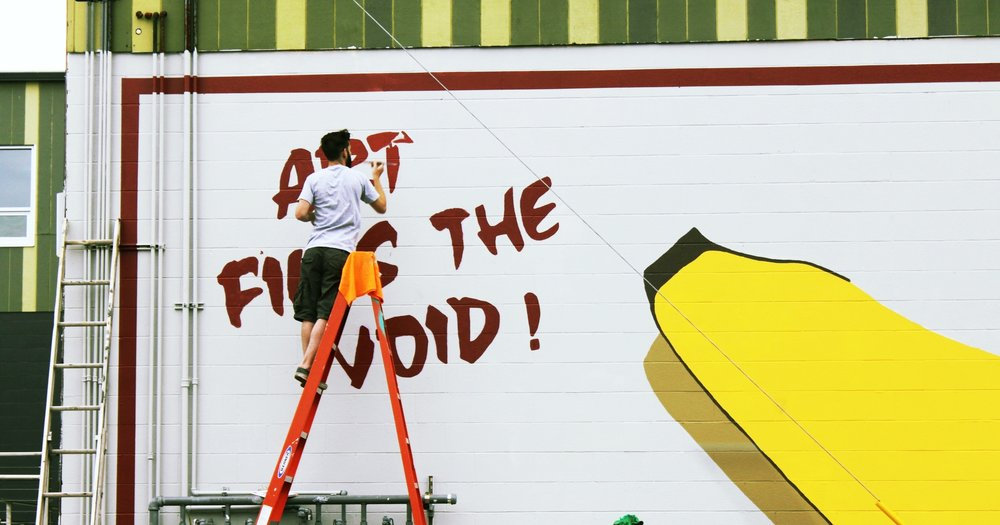
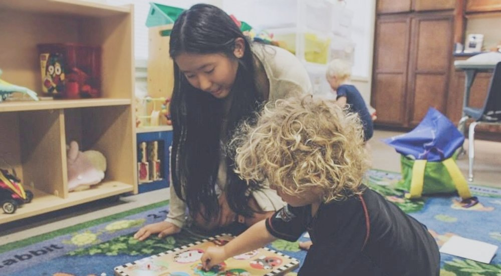
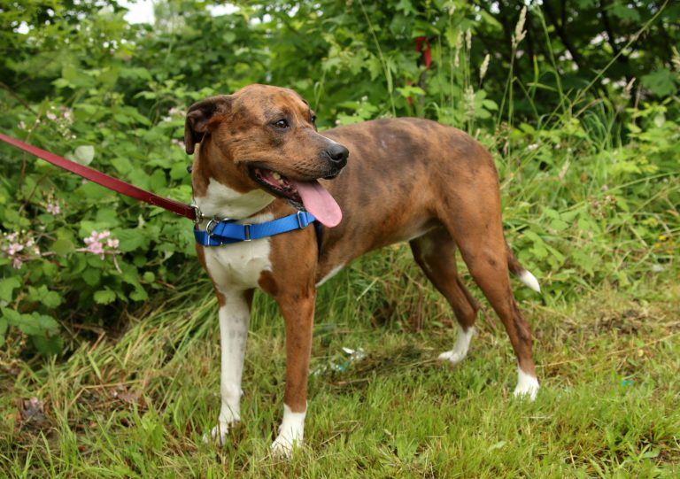
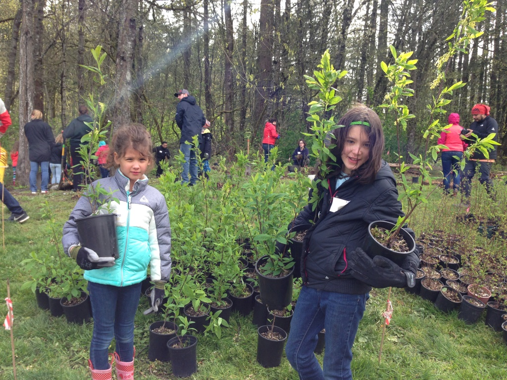
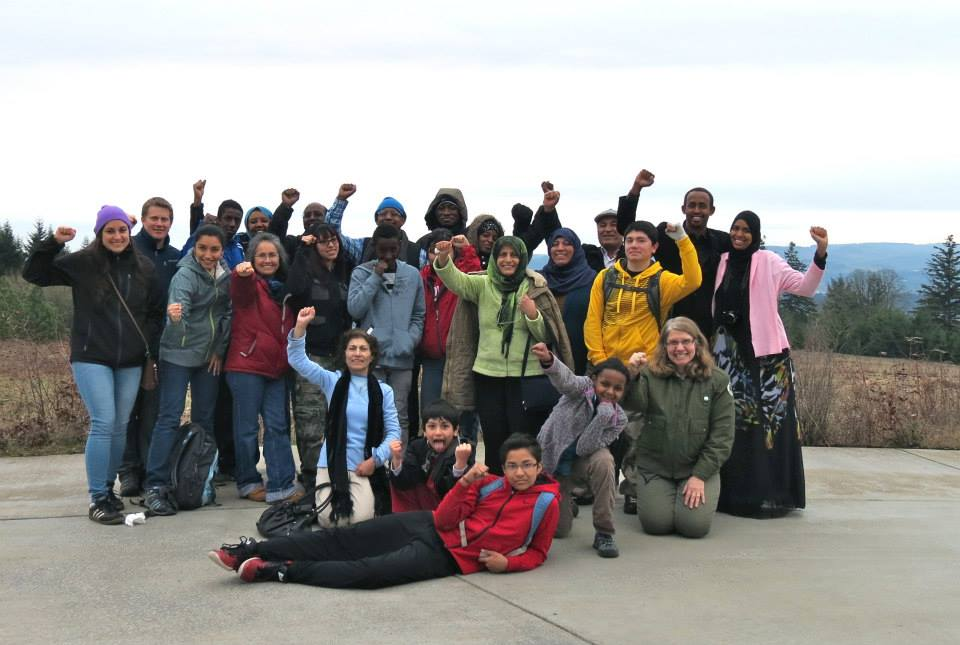

- 
- 
- 
- 
- 
Morpheus Youth Project
Transformation through arts and awareness. The purpose of the Morpheus Youth Project is to create an accessible, safe and respectful environment that encourages positive growth and provides creative opportunities through the arts and humanities. We believe that by investing in our youth through education and encouraging the development of self-awareness, we will provide viable tools and positive options for young people as they mature. We believe that every young person deserves the opportunity to develop into a positive and productive human being and to potentially become a community mentor for those who follow. By building confidence and instilling self-awareness, the youth in our programs develop the tools to transform their lives, which may have been unhealthy and self-destructive.
Portland Street Art Alliance
Portland is known for its quirky DIY mentality, progressive urban planning, bicycle-friendliness, and livable neighborhoods. Some of Portland's best street art can be found in its major cultural centers like Alberta, Belmont, Hawthorne, Central Eastside, and Mississippi. In Portland's neighborhoods you can find art by internationally renowned artists, local legends, and anonymous citizens. Below are some resources to find street art in Portland, network in our community, and learn about its history. But this just scratches the surface of the resources and art out there to discover, so put on your walking shoes, hop on your bike, and explore the streets and hidden spaces of Portland! Street art is always changing, so you never know what's around the next corner!
Portland Homeless Family Solutions
Portland Homeless Family Solutions empowers homeless families with children to get back into housing and to stay there long-term. We envision a community where no family experiences homelessness and where every family receives the support and compassion necessary to thrive.
Pixie Project
At Pixie, we make animal adoption and rescue a fun, family friendly, and positive experience. Our dedicated staff focuses on finding life-long matches between pet and adopter and takes a hands-on, personal approach to each and every adoption. Pixie is committed to keeping pets healthy, happy, and in their homes for life. Our on-site clinic offers low-income and homeless pet owners access to vital veterinary care and low-cost spay/neuter surgeries, keeping pets out of shelters and saving lives.
Friends of Trees
Friends of Trees was founded in 1989 by a local community member who loved trees and started planting them in Portland neighborhoods. Today, Friends of Trees is a nationally recognized, regional leader in improving the urban tree canopy and restoring sensitive natural areas—through programs delivered by thousands of volunteers. Friends of Trees greens our region while building community.
Unite Oregon
Led by people of color, immigrants and refugees, rural communities, and people experiencing poverty, we work across Oregon to build a unified intercultural movement for justice.